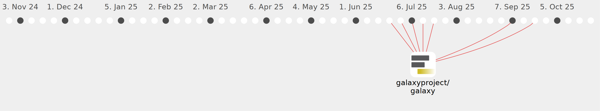

marius-mather

Commits all-time: 109
Commits last year: 109

(109)
- 9d7b8cb
- b2db6ca
- 78f5816
- c3e7888
- 1abd9a8
- bfb7a58
- 4abb613
- d1bb842
- 989c58b
- f0b687a
- 5a79576
- 7f8b711
- 187fd5b
- b6d9b8d
- 4ad58da
- a429eba
- 336760f
- 8390196
- 6405547
- 9180eae
- 0207a7f
- 0585050
- 6fe8c6f
- 0d5633d
- 2c2be1f
- a43fe48
- c5c3b48
- 5a42326
- 884e59d
- ee17c93
- 22a646f
- e37855d
- 953414c
- be6fa6c
- 7446b54
- 1a0844b
- e067b75
- fe6bc94
- 2ed1783
- cc44513
- 5b2b4c9
- 27f701b
- 3e81fc1
- 58d052f
- 90f6238
- 86a22b4
- bb650b8
- f7af973
- 6eed48d
- d3bb0d0
- 67c20ab
- 8c4b57f
- e91d057
- b4b9f31
- b7a86c8
- 3e393d5
- 1949bc4
- dd1d9b6
- af98baf
- 6231c42
- 4796a86
- d4e02eb
- 003dbdb
- 672386c
- 9436735
- da6bb6f
- 0a2399c
- 6d7deab
- 2700989
- c11e752
- fff7a92
- 1f4cd32
- 7016c3f
- 5d7b386
- 8155fad
- 4e03dfa
- d86d3a4
- 02c288c
- 019c9e3
- 07a63c0
- 201b5fe
- 56b2cb7
- 80d2d51
- 7e3e76c
- dc9bc7b
- a704491
- b2f2db3
- 017d4b6
- 0e69712
- 33c2f6a
- 68f4b37
- d52f0a9
- 339db8b
- 6db289c
- e0783da
- 21a741a
- f8af6de
- 0075a85
- 68ab476
- 1f8d405
- 764a1fa
- f845b99
- c9b0147
- f84689f
- 77c4e7f
- aa455dd
- 1f3d3eb
- 2603775
- d0004f6